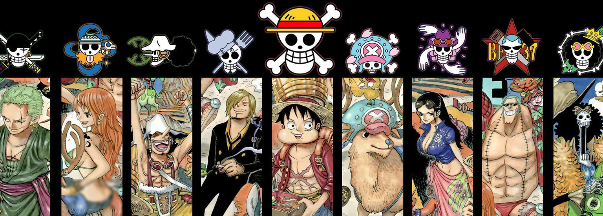

Eiichiro Oda est un célèbre Mangaka Japonnais notemment grâce à son manga One Piece.
Il est né le 1er Janvier 1975 au Japon plus précisément dans la ville de Kumamoto.
Sa conjointe est Chiaki Inaba.
Son oeuvre One Piece à reçu plusieurs titres comme :
One Piece est prépubliée depuis le 22 juillet 1997 dans le magazine hebdomadaire Weekly Shōnen Jump.
Les droits de la série sont acquis par la société Toei Animation qui adapte le manga en anime, cette version est diffusée au Japon chaque dimanche depuis 1999.
La série compte plus de 950 épisodes en 2021.
One Piece est le manga le plus vendu au monde, dépassant Dragon Ball de Akira Toriyama3, avec plus de 480 millions d'exemplaires en circulation en janvier 2021. C'est également la série la plus vendue au monde dessinée par un seul auteur. En France, la série est devenue leader en 2011 et s'est vendue à 6,5 millions d'exemplaires depuis sa sortie.